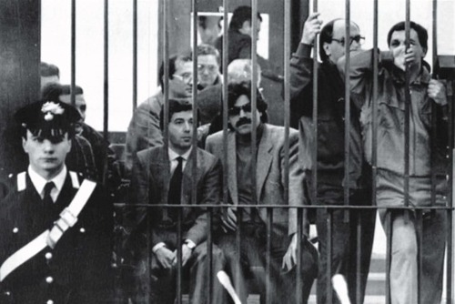

Il 1989 è l’anno dei veleni al palazzo di giustizia di Palermo. Falcone viene accusato in un anonimo di aver fatto ritornare in Italia il pentito Salvatore Contorno, esponente della mafia perdente, sterminata dai corleonesi di Totò Riina, e di averlo coperto nel progetto di eliminazione dei capimafia nemici usciti vincitori dalla guerra tra clan. Falsità espresse in lettere anonime, passate alla storia come le lettere del “corvo”, ed inviate a vari rappresentanti delle istituzioni. Il 20 giugno del 1989 Falcone sfugge a un agguato tesogli nella villa all’Addaura in cui trascorreva l’estate: un borsone con cinquantotto candelotti di dinamite posto sulla scogliera dove era solito fare il bagno, viene trovato per caso da un agente della scorta. La bomba viene disinnescata e l’attentato fallisce. È lo stesso Falcone a spiegare il senso di un attentato i cui reali contorni non sono mai stati chiariti. Il giudice parla di una manovra ideata in maniera perfetta da “menti raffinatissime”, adatta a dar credito alle accuse delle lettere diffamatorie del “corvo”. “Il contenuto delle accuse doveva essere il movente che aveva spinto la mafia a uccidermi. Sarei stato un giudice delegittimato perché scorretto, l’omicidio sarebbe stato giudicato quasi naturale”. Dopo l’attentato dell’Addaura, per diretto interessamento del Presidente della Repubblica Francesco Cossiga, Falcone viene nominato dal Consiglio superiore della Magistratura procuratore aggiunto di Palermo. Ma il “corvo” continua ad avvelenare il clima del Palazzo di Giustizia. Pur avversato e ostacolato, Falcone va avanti. Già nel 1988 aveva collaborato con Rudolph Giuliani, procuratore distrettuale di New York, nell’operazione “Iron Tower”, inchiesta che aveva disarticolato due famiglie mafiose coinvolte nel traffico di eroina, quelle dei Gambino e degli Inzerillo. Nel gennaio ’90 coordina un’indagine che porterà all’arresto di quattordici trafficanti colombiani e siciliani. Il clima ostile del Palazzo cresce e Falcone si rende presto conto di trovarsi isolato. Teso il rapporto con il procuratore Piero Giammanco che ne ostacola sistematicamente il lavoro costringendolo a limiti angusti nella manovra delle indagini. Falcone avverte che a Palermo, non riesce più a lavorare come vorrebbe e che i quotidiani dissensi lo logorano. Decide così di accogliere l’invito del ministro di Grazia e Giustizia Claudio Martelli a ricoprire il ruolo di Direttore degli Affari Penali al Ministero dove prende servizio nel novembre del 1991.